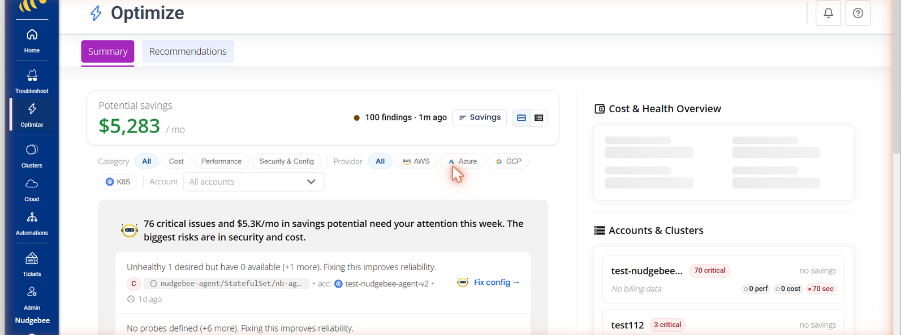

AI FinOps agents are software agents that watch your cloud and AI spend, explain it in plain language, and take or recommend cost actions on their own. Unlike a dashboard that only reports numbers, an agent connects a finding to an action: it spots the waste, drafts the fix, and either applies it through an approval or hands it to your team as a pull request. This guide compares the nine best AI FinOps agents in 2026 on the things that actually decide a purchase: autonomy, cloud and Kubernetes coverage, and how much access they need to your environment.
Quick comparison
| Tool | Best for | Autonomy | Cloud + K8s coverage | Access model | Source access | Pricing |
|---|---|---|---|---|---|---|
| NudgeBee | Teams that want self-hosted, PR-based cost remediation with human approval | Recommend + act via PR/approval | AWS, Azure, GCP, on-prem, Kubernetes and non-K8s | Read-only by default, no data ingestion | Readable source | Free to self-host; 2 clusters free on Cloud SaaS |
| Amnic | Multi-cloud teams that want recommendations with no write access | Recommend only, read-only | AWS, Azure, GCP, Oracle, Alibaba, K8s | Read-only (no write access) | No | Custom |
| Vantage FinOps Agent | AWS teams wanting an in-console agent that buys commitments | Acts (commitment purchases, with approval) | AWS-centric, multi-cloud visibility | Write, scoped + approval | No | Custom |
| nOps (Clara) | AWS and Kubernetes teams wanting insight-to-action | Recommend + execute | AWS + K8s primary; also GCP, Azure, SaaS | Write, scoped | No | Custom |
| Cloudgov.ai | Regulated teams wanting FinOps action behind approvals | Generates IaC fixes, human approval | AWS, Azure, GCP, Snowflake, Oracle | Read-only (no write access) | No | Custom |
| Akira.ai | Enterprises on a broad agentic-AI platform wanting FinOps as one workflow | Orchestrated automation | AWS, Azure, GCP, hybrid, on-prem | Varies (platform) | No | Custom |
| Mavvrik | AI/ML teams with heavy GPU and LLM spend | Recommend + track | Multi-cloud, K8s, GPU/LLM | Tracking (SDK) | No | Custom |
| FinOpsly | Finance teams wanting a platform with a natural-language assistant (ASK FI) | Recommend + act | Multi-cloud + Databricks, Snowflake | Advisory + actions | No | Custom |
| ZopNight | Teams wanting non-prod scheduling with a blast-radius preview | Acts, preview before destructive changes | AWS, GCP, Azure, EKS/GKE/AKS | Read-only APIs, previewed actions | No | Custom |
Pricing for most tools in this category is quote-based. Confirm current terms with each vendor.
What is an AI FinOps agent?
An AI FinOps agent is an autonomous software agent that manages cloud and AI cost the way a FinOps engineer would. It reads your billing, usage, and infrastructure data, finds waste and anomalies, and then acts. The action can be a recommendation, an automated change, or a pull request for a human to approve.
Traditional FinOps tools stop at visibility. They show you a dashboard, a forecast, and a list of recommendations, and then a human has to do the work. An agent closes that loop. It does not just tell you a node group is oversized. It drafts the rightsizing change, checks the blast radius, and routes it for approval.
This is the shift that defines the category in 2026. The FinOps Foundation's own research shows most enterprises are now managing AI and GPU spend on top of traditional cloud cost, and the manual, dashboard-first model does not scale to that. Agents are the answer teams are reaching for.
Find the root cause faster
NudgeBee finds the root cause of an incident, with evidence, and suggests a fix. Runs self-hosted in your own environment.
How AI FinOps agents differ from FinOps cost tools
It helps to separate two things that search results often blur together.
Both sit inside a wider market. For the broad-cloud view, including the provisioning side that these agents assume is already handled, see the best cloud cost optimization tools and automation platforms.
FinOps cost tools such as Finout, CloudZero and Kubecost are built first on allocation, unit economics and visibility. They tell you where the money goes, down to a team, feature, model or Kubernetes namespace. The line is blurring in both directions: Finout now runs detection, investigation and orchestration agents on top of its allocation model, CloudZero has rebranded around AI cost and ROI, and CAST AI is an execution platform in its own right rather than a reporting one, which is why it also appears in our Kubernetes comparison.
AI FinOps agents are built around action. Visibility is the starting point, not the product. The agent's job is to reduce spend, safely, with as little human toil as possible. The nine tools below are grouped in this second category, though several also do strong allocation.
If you only need clean showback and chargeback, a cost tool is enough. If your problem is that recommendations pile up faster than anyone can action them, you want an agent.
How we evaluated these tools
We scored each tool on the criteria that ranking buyers in this space actually weigh:
- Autonomy. Does it only recommend, or can it act? If it acts, how?
- Access model. Does it need write access to your cloud, or does it stay read-only and act through pull requests and approvals? This is the number-one trust question in 2026.
- Cloud and Kubernetes coverage. Multi-cloud breadth, and whether it handles Kubernetes rightsizing, not just VM and commitment optimization.
- AI and GPU cost support. Whether it can allocate and optimize LLM, token, and GPU spend.
- Safety. Blast-radius preview, human-in-the-loop approvals, guardrails, and audit trails.
- Deployment and data model. SaaS versus self-hosted, and whether it ingests your data or queries in place.
How teams actually run it
Four AI assistants sharing one context across SRE, FinOps, Kubernetes and CloudOps, with every change gated on human approval.
The 9 best AI FinOps agents in 2026
1. NudgeBee
Best for: teams that want a self-hosted agentic platform where the FinOps agent remediates cost through pull requests, with a human in the loop.
NudgeBee is a self-hosted platform for cloud operations with readable source, offering pre-built AI Assistants for SRE, FinOps, and Kubernetes work plus the ability to build your own agentic workflows. The AI-FinOps Assistant is the piece that matters here. It watches for cloud waste and cost anomalies across AWS, Azure, GCP, on-prem, and Kubernetes, then raises right-sizing and cleanup fixes as pull requests for your team to approve.
The design choice that sets it apart is the access model. NudgeBee stays read-only by default and does not ingest your data, it queries in place, so nothing leaves your environment. Actions happen through PRs and approvals rather than silent write access, which is what makes autonomous cost work acceptable to security and compliance teams. It runs in your VPC or as SaaS, supports Bring Your Own Model (Claude, GPT, Gemini, Bedrock, Ollama), and works with the stack you already run, including Datadog, Grafana, Prometheus, and GitHub.
In one deployment, a North American healthcare enterprise cut cloud waste by 40 percent and saved 1.2 million dollars in annual cloud costs within 14 days, with zero compliance breaches across 4,500 or more instances (case study). Much of that came from workloads running at 30 to 40 percent utilization while billed at full capacity, exactly the pattern a FinOps agent is built to catch.

Consider it when: you want self-hosting, readable source, and PR-based remediation rather than an agent with standing write access.
2. Amnic
Best for: multi-cloud teams that want agent-led FinOps without giving up write access.
Amnic runs a set of context-aware AI agents that operate with no write access to your infrastructure, a read-only trust model aimed at teams wary of autonomous changes. The agents surface findings, guardrails, and recommendations across AWS, Azure, GCP, Oracle, Alibaba, and Kubernetes. They advise rather than remediate on their own, so a human still applies the change. It is one of the more established names in the AI-agent framing of FinOps.
Consider it when: read-only operation is a hard requirement and you want strong recommendations rather than autonomous action.
3. Vantage FinOps Agent
Best for: AWS-centric teams that want an in-console agent that can act, including buying commitments.
Vantage is a widely used cost platform, and its FinOps Agent brings an in-console assistant that identifies waste and can act, including buying AWS commitments such as Compute Savings Plans and Reserved Instances through natural language, with approval prompts and an audit log. It surfaces in both the console and Slack, and adds cost intelligence and anomaly explanation on top.
Consider it when: you already lean on Vantage for visibility and want the agent layer on top.
4. nOps (Clara)
Best for: AWS and Kubernetes teams that want insight-to-action without living in dashboards.
Clara is nOps's AI agent. It lets teams query cost data in natural language, detects anomalies with root cause, and generates and executes optimization, so it does take action rather than only advise. Its primary depth is in AWS and Kubernetes, including namespace-level EKS cost, and it also covers GCP, Azure, and SaaS spend.
Consider it when: your spend is concentrated in AWS and Kubernetes and you want an agent that executes, not just recommends.
5. Cloudgov.ai
Best for: regulated teams that want autonomous FinOps with governance and no write access.
Cloudgov.ai centers on FinOps governance, anomaly detection, and infrastructure-as-code remediation, with a read-only posture that never requires write permissions to production. It generates fixes as IaC changes routed through tickets or pull requests and an approval workflow, rather than executing directly, which is what makes its "acts, not just reports" claim safe for regulated teams.
Consider it when: governance and audit requirements are as important as the savings themselves.
6. Akira.ai
Best for: enterprises already on a broad agentic-AI platform that want FinOps as one workflow among many.
Akira.ai (by Xenonstack) is a general enterprise agentic-AI platform used across industries such as healthcare, manufacturing, and financial services. Its Agent FinOps is one use case, built on the same multi-agent orchestration, automation, and analytics stack, rather than a FinOps-first product. It covers AWS, Azure, GCP, and hybrid or on-prem environments.
Consider it when: you are already standardizing on Akira for agentic AI and want to add a FinOps workflow to it.
7. Mavvrik
Best for: AI and ML teams with heavy GPU and LLM spend.
Mavvrik focuses on AI and hybrid-infrastructure FinOps, with particular attention to GPU and LLM token cost tracking across providers like OpenAI, Anthropic, Google, and Meta. It describes itself as a cost-management platform with agent-level tracking via an SDK, and covers multi-cloud, on-prem, and Kubernetes. It is a fit for teams where model training and inference dominate the bill.
Consider it when: GPU and token costs, not general cloud VMs, are your biggest line item.
8. FinOpsly
Best for: finance teams that want a full FinOps platform with a natural-language assistant on top.
FinOpsly is a FinOps platform positioned as an "AI-native system of action," with a natural-language assistant called ASK FI as one module alongside its optimization and reporting tools. ASK FI lets finance and non-engineering stakeholders query and understand cloud spend in plain language. It covers AWS, Azure, and GCP plus Databricks and Snowflake.
Consider it when: your primary users are in finance and want plain-language answers backed by a full platform.
9. ZopNight
Best for: teams that want to auto-schedule non-production resources with a safety preview before changes land.
ZopNight (by Zop.dev) is a multi-cloud autopilot that auto-sleeps, schedules, and right-sizes non-production resources to cut idle spend. It connects through read-only cloud APIs and IAM roles, with no agents or sidecars, and shows a blast-radius preview before any destructive action. It covers AWS, GCP, and Azure, including EKS, GKE, and AKS.
Consider it when: non-production idle spend is your problem and you insist on previewing impact before anything changes.
How to choose the right AI FinOps agent
Work through four questions in order.
1. How much access are you willing to give? This is the first filter. If security will not approve standing write access, shortlist the read-only and PR-based options (NudgeBee, Amnic, Cloudgov.ai). If you are comfortable with scoped write access, the field opens up.
2. Where does your spend live? Match coverage to reality. AWS-heavy shops are well served by Vantage and nOps. Kubernetes-heavy environments need genuine rightsizing, not just commitment management. GPU and LLM-dominated bills point to Mavvrik or an agent with explicit AI cost support.
3. Recommend or act? A tool that only recommends still leaves the toil with your team. If your real problem is a backlog of recommendations no one has time to apply, prioritize agents that act, through approvals or pull requests.
4. SaaS or self-hosted? If data cannot leave your environment, you need a self-hosted, query-in-place option. This is where open source and no-data-ingestion designs matter.
Start free, any scale
Readable source, self-hosted, and free at any scale. 2 clusters or cloud accounts free on Cloud SaaS.
The 2026 shift: from dashboards to action
The FinOps Foundation reports that the vast majority of enterprises are now managing AI spend alongside traditional cloud cost. That volume and volatility is what broke the dashboard-first model. When recommendations arrive faster than anyone can action them, visibility alone stops helping.
That is the whole reason this category exists. The tools that win in 2026 are the ones that connect a finding to a safe action, whether that is an approval, a preview, or a pull request. The open question for each buyer is how much authority they are willing to hand to an agent, and how that authority is governed.
NudgeBee's answer is that autonomy and authority are separate. The agent can work autonomously, but it does not get standing write access to your cloud. It proposes, a human approves, and every action is auditable. If that model fits how your team thinks about risk, see how the AI-FinOps Assistant works or read the healthcare cost case study.
If most of your spend sits in Kubernetes rather than across the wider cloud bill, start with our guide to the best Kubernetes cost optimization tools, which compares Kubecost, OpenCost, CAST AI, ScaleOps and NudgeBee by what each one executes versus only recommends.